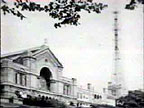

|
Autoevaluador
Enlaces
Bibliografía |
Historia mundial de la TV > 1.2 El nacimiento (1935-1941)
1.2 El nacimiento (1935-1941)
Lrente a la competencia entre los modelos de televisión defendidos por Baird y por la EMI, el Gobierno británico decide nombrar una comisión investigadora para definir la posición del Estado en materia televisiva. En enero de 1935, dicha comisión adoptó una definición mínima de 240 líneas y 25 imágenes por segundo de forma que el sistema mecánico quedaba relegado frente a la calidad de las imágenes electrónicas. Casi dos años más tarde (el 2 de noviembre de 1936), la BBC comenzó sus transmisiones desde los míticos estudios londinenses de Alexandra Palace.
Hacia mediados de la década de 1930 gobiernos y compañías televisivas de los países tecnológicamente más desarrollados se decantan por la televisión electrónica, al tiempo que las transmisiones tienden a regularizarse y a crecer en las principales urbes (Londres, Berlín, París, Nueva York).
En los EEUU -pese a la temprana apuesta por la vía electrónica- el desorden fue moneda corriente: las definiciones técnicas de la televisión variaban año a año (de 240 líneas, en 1933, a 525 líneas, en 1941). La primera emisora en establecer un servicio regular fue la National Broadcasting Company (NBC), subsidiaria de la RCA, en marzo de 1939; sin embargo, el organismo regulador de la radio y la televisión, la Federal Communications Commission (FCC), sólo autorizó la televisión comercial en 1941.
En Francia, donde diversos equipos de especialistas venían trabajando desde finales del siglo XIX en la puesta a punto del nuevo medio, fue René Barthélemy quien instaló (abril de 1935) un estudio de televisión en la parisina Escuela Superior de Electricidad y utilizó la Torre Eiffel como soporte de la primera antena emisora. En pocos años (1935-1939) los franceses adoptaron el sistema electrónico.
Alemania es otro país donde la actividad en torno a la televisión fue intensa. Ejemplo del avance en materia televisiva experimentado entonces, fue la retransmisión en directo de los Juegos Olímpicos de Berlín 1936. La recepción de las emisiones tuvo lugar en lugares públicos: “teatros” con capacidad para 50 personas y pantallas de cerca de dos metros de diagonal (Palacio, 1992). Hacia 1937 los alemanes perfilaban su propio sistema electrónico de televisión con una definición de 441 líneas.
Algo más rezagados en el liderazgo televisivo se encontraban Italia (en 1941 tenía una televisión experimental de 441 líneas) o la URSS (adoptó un sistema electrónico de 343 líneas hacia 1937).
Pese a las fuertes inversiones económicas de la industria de la radio estadounidense (sólo en investigación y compra de patentes la RCA invirtió 9 millones de dólares durante 1930-39) y de los Estados británico y alemán, la ausencia de una producción industrial de aparatos receptores lastraba el desarrollo de la televisión. Fue en Gran Bretaña en 1937 y en los EEUU en 1939 cuando tuvieron lugar las primeras fabricaciones en serie de aparatos para uso doméstico-familiar.
Sin embargo, los avances en materia televisiva experimentados entonces se vieron congelados y las transmisiones en Europa suspendidas ante la Segunda Guerra Mundial (1939-1945). Así, por ejemplo, en septiembre de 1939 la BBC decide interrumpir sus 14 horas semanales de programación a partir de la declaración de guerra del Gobierno británico a Alemania. En tanto que, en los EEUU, país que en 1941 contaba con cerca de cinco mil aparatos y las primeras quince licencias de emisoras comerciales, el Gobierno prohibió la fabricación de televisores orientando los recursos de la industria electrónica hacia la Guerra en curso.



1ª antena de la BBC en el Alexandra Palace
© www.meldrum.co.uk/mhp/
knackers/transmit.html
La NBC en la actualidad
© www.destinationhollywood.com
/imf/photos